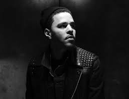
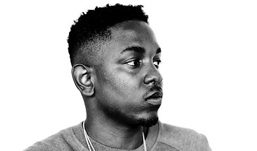
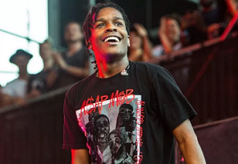

Favorite Music Artists



J. Cole
Kendrick Lamar
ASAP Rocky
XXXtentacion
Besides rap artists, I enjoy rock artists as well, mainly all the 70's and 80's bands. Some of them include Def Leppard, Rush, Metallica, Led Zeppelin, Van Halen, and Tom Petty.
I also play a couple of instruments as well. I have been playing guitar since I was 6 years old, and for a brief time I played both the drums and piano.